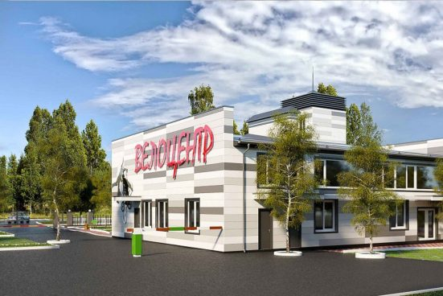

<div class="container">
  <div class="row">
    <div class="col-lg-12">
      <h1 class="text-center">Мы - молодая, но успешная компания!</h1>
    </div>
    <div class="col-lg-6">
      <mat-card class="example-card">
        <mat-card-header>
          <mat-card-title>О Велоцентре</mat-card-title>
        </mat-card-header>
        
        <mat-card-content>
          <p>
            Наш Велоцентр - это уникальный специализированный комплекс для всех
            любителей велоспорта и активного отдыха в Харькове. ВелоЦентр Байк –
            это современный, комфортабельный комплекс, под крышей которого
            сосредоточено все, что нужно для любителей велосипедов: всесезонный
            прокат велосипедов, велоРЕМОНТ и детско-юношеская спортивная школа
            велоспорта. Кроме того, для Вашего удобства, ВелоЦентр оборудован
            душевыми, раздевалками, помещениями для хранения велосипедов,
            пунктом медицинской помощи и непосредственным выездом на
            велодорожку. ВелоЦентр расположен в самом центре Харькова. Просто
            приезжайте, берите велосипед и получайте удовольствие от езды по
            отличной велосипедной трассе вдоль Белгородского Шоссе и Лесопарка.
            Если Вы не умеете кататься на велосипеде – приезжайте, мы научим!
            Если Вы профессионал – приезжайте, мы Вас удивим!
          </p>
        </mat-card-content>
      </mat-card>
    </div>
    <div class="col-lg-6">
      <mat-card class="example-card">
        <mat-card-header>
          <mat-card-title>Социальные программы</mat-card-title>
        </mat-card-header>
        
        <mat-card-content>
          <p>
            ВелоЦентр рад каждому гостю. Мы уделяем повышенное внимание людям с
            особыми потребностями. Мы поддерживаем позитивный настрой и активную
            жизненную позицию этих сильных духом людей. Ведите активный образ
            жизни, не смотря ни на что, а мы Вам в этом поможем! Мы, совершенно
            бесплатно, отремонтируем и приведем в порядок ваше инвалидное
            кресло. Вам нужно будет оплатить только запчасти, на которые у нас
            предусмотрена гибкая система скидок. Даже сложный комплексный ремонт
            мы сделаем с максимально возможным дисконтом. Мы хотим, чтобы каждый
            гость ВелоЦентра чувствовал себя как дома!
          </p>
        </mat-card-content>
      </mat-card>
    </div>
  </div>
</div>
